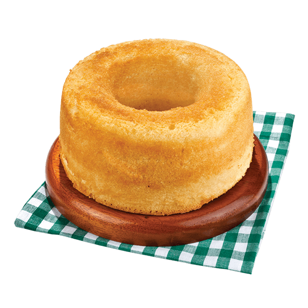

Bolo de Laranja
Ingredientes
- 4 ovos grandes
- suco de 2 laranjas
- 1 xícara (chá) de óleo
- 2 xícaras de farinha de trigo bem cheias
- 1 xícara de açúcar bem cheia
- 1 colher (sopa) de fermento bem cheia
- raspas de laranja
Modo de Preparo
- Bata no liquidificador os ovos, o suco de laranja e o óleo
- Em seguida adicione o trigo e o açúcar e misture bem até obter uma mistura homogênea
- Adicione por último o fermento, mexa por mais alguns minutos e disponha a massa em uma forma com furo central untada e enfarinhada
- Asse em forno médio (180° C), preaquecido, por 40 minutos e está pronto